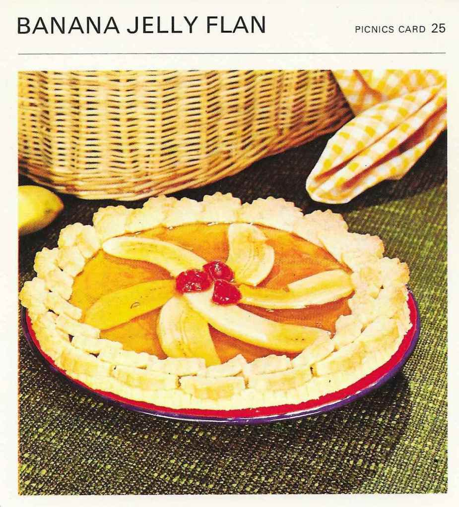

Back to Table of Content
Banana Jelly Flan

Ingrediens
- Pie
- 1 cup all-purpose flour
- pinch salt
- 1/4 cup butter
- grated rind of 1/2 orange
- 1-3 tablespoons water
- Filling:
- 1/2 package orange or apricot flavored jello
- 1 cup boiling water
- 2 bananas
- 2 candied cherries
Preparation
- Sift flour and salt, rub in butter, add the grated orange rind, and blend with
the water to a firm dough.
- Roll out and line the pan.
Decorate the edge with small semi-circles of pastry – see picture.
- Prick and bake blind (see Card 8) until crisp and brown.
Allow to cool.
- Dissolve the jello in the boiling water and allow to cool.
Slice the bananas lengthwise,
arrange in the cold piePour the cooled jello over the bananas and leave to set.
When set, decorate with the
halved candied
cherries.